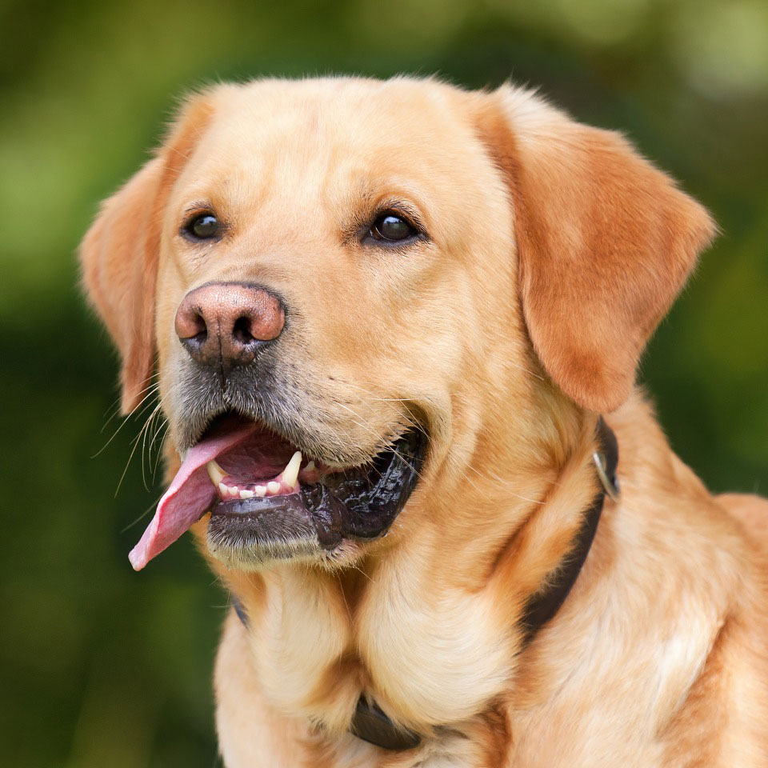
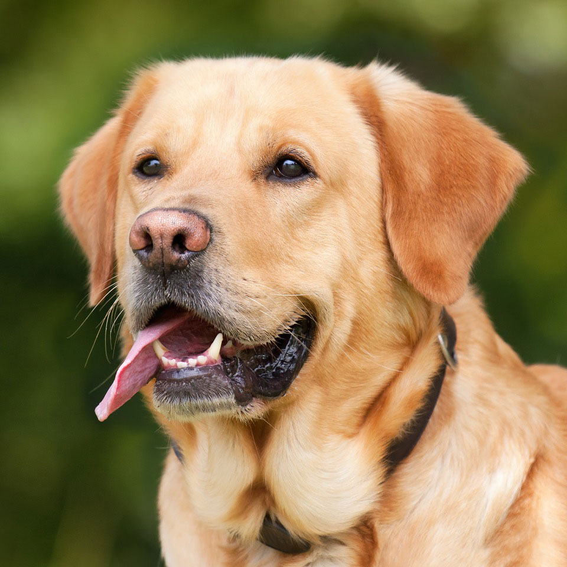

Ghost

- Ghost is a very energetic puppy looking for lots of attention
- 4 months old
- Breed: West Highland Terrier
- Very lively and needs a lot of training
- Ideal for a house with no other pets.
Rescue charity: The Doggie Sanctuary
Lola
- Lola is looking for a quiet home to settle into.
- 8 years old
- Breed: Golden Retriever
- Quiet and loves her bed
- Gets on well with other cats and dogs
Rescue charity: Furever Homes
Kenny

- 6 years old
- Breed: Terrier crossbreed
- Recently brought in as a stray
- Very lively but likes his sleep
- Not suitable for a home with cats
Rescue charity: Furever Homes
Freddy

- 3 years old
- Breed: Crossbreed
- Energetic and lively
- Gets on well with other cats and dogs
Rescue charity: The Cat Rescue
Bruce


- Bruce is a very well behaved Labrador looking to settle down
- 5 Years Old
- Breed: Golden Labrador
- Gets on very well with children
- Can be rehomed in a house with cats/dogs
Rescue charity: The Doggie Sanctuary
Cindy

- Cindy is a very well behaved Black Retriever
- 3 Years Old
- Breed: Black Retriever
- Gets on very well with other dogs
- Not suitable to be rehomed with children
Misty
- Misty is a reserved cat that recently came into our care.
- 4 Years Old
- Breed: Crossbreed
- Can be rehomed with dogs
- Can be a bit grumpy sometimes!
Ruby

3 Years old.
Maine Coon
Maine Coon